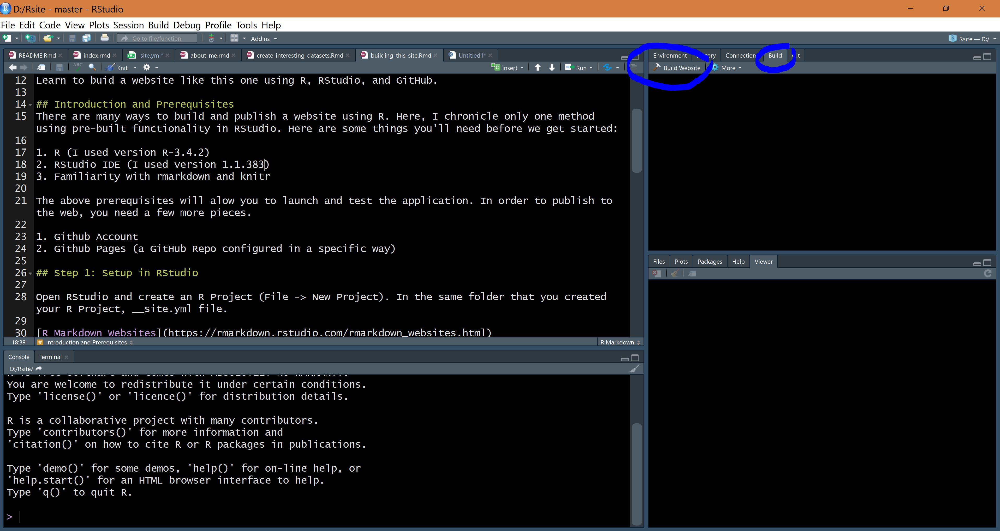

Learn to buid a website like this one using R, RStudio, and GitHub.
There are many ways to build and publish a website using R. Here, I chronicle only one method using pre-built functionality in RStudio. Here are some things you’ll need before we get started:
The above prerequisites will allow you to launch and test the application. In order to publish to the web, you need a few more pieces.
Open RStudio and create an R Project (File -> New Project). Then create a new R Script (File -> New File -> R Script), copy and paste the code below into it, and save it within your R Project directory with the name _site.yml.
name: "awesome_site"
navbar:
title: "Awesome Site!"
type: default
left:
- text: "Home"
icon: fa-home
href: index.html
- text: "About"
icon: fa-info
href: about_me.html
- text: "Blog"
icon: fa-street-view
href: blog.html
right:
- text: "Need Help"
icon: fa-question
href: https://google.com
output:
html_document:
df_print: kable
output_dir: "."The _site.yml file is your website configuration file, it will define
some the elements that persist across your site such as the navigation
bar, headers or footers, or the global theme. For the most part you have
a lot of customization here. However, one piece that is extremely
important not to change is the output_dir: "." line. This
tells RStudio to keep important files in the root directory of the R
Project folder which is how Github Pages will expect it to be.
You can read more about R Markdown Websites and _site.yml here.
There’s one more piece we need for RStudio to completely handle our new website, a main/landing page! Create a new R Markdown file (File -> New File -> R Markdown, choose HTML and give it a title like “Welcome!”). Make some simple changes to the R Markdown template RStudio provides so you know that the site you render is truly yours. For example, write yourself a congratulatory message as the first paragraph. Now save this file as index.Rmd.
Confirm that your _site.yml and your index.Rmd files exist in your R Project folder. Close and reopen RStudio. Now you should see a new tab near the Environment pane called “Build”. Navigate to that tab and click “Build Website”. The Build Website button knits every .Rmd file in your R Project root directory. Voila! Your site should open in the viewer pane or in a new window.
Now, create more pages (e.g., about_me.Rmd, blog.Rmd, any page you like!).

Before sending all of your files to your GitHub repo, you’ll need an empty file titled .nojekyll within your R Project directory. When this file is pushed or uploaded to your GitHub repo, it tells GitHub not to publish your website using Jekyll.
To get your website files onto GitHub, you can either use Git if you already know how, learn Git, or manually upload all of your files to your Github repo.
See the optional lines you can add into your _site.yml file to further upgrade or customize your site!
theme: flatly Choose a theme
In your _site.yml file you can specify a global theme to be applied.
Simply include theme: theme_name under html_output. You can also style
your site with CSS or Cascading Style Sheets.
css: my_style.css Custom CSS
To completely customize your theme or individual pages, you can add CSS.
For example, add the following code immediately following your yaml
header in any of your .rmd files. Make sure it’s outside of any code
chunks. A better way to apply global styles to your entire site is to
create a my_style.css 1 file with your css code, and tell your
_site.yml file to include it for html output.
in_header: GA_Script.html Google Analytics
To track and understand who visits your website, how often, and what
they do there. You can
learn about how to do this via the Google support documentation.
Or name it whatever you like, as long as it’s a .css file and you specify the correct name in your _site.yml file.↩︎